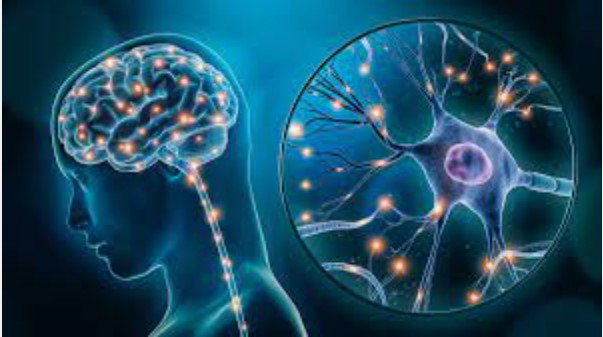
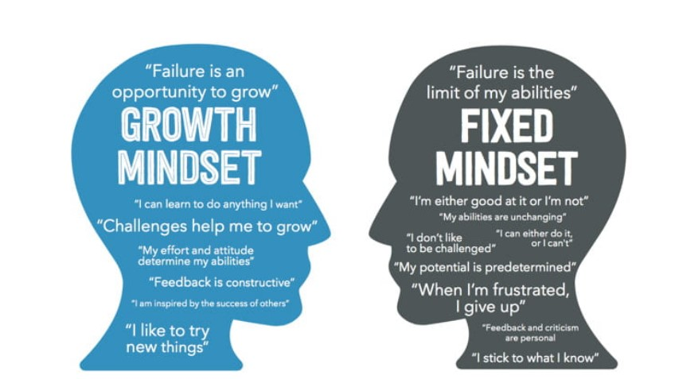

Neuroplasticity is the brain's ability to change and adapt as a result of experience. It happens throughout life eventhough can be significant at the young age.
With the understanding of neuroplasticity, people have built up many learning programms to maximize human's brain capacity since the very young age like baby. It also provides the principles for restoring the brain's functions through rehabilitation after brain damaging such as stroke or traumatic injuries.
Understanding the principles of neuroplasticity helped me realize that it is never too late to study new things at any age, as long as I can keep good learning habits and environment, maintaining a good life styles to maximize the brain neuroplasticity.
There are some ways to help encourage your brain to adapt and change, at any age.
If you are interested, please research more on this site

Growth Mindset is the belief that you can cultivate and improve upon your abilities through practice and effort.
It differs significantly from a “Fixed Mindset,” which says that one’s ability is largely predetermined and unchangeable.
Having a growth mindset is important because it can help you overcome obstacles when learning something new or developing a new skill. The world is changing very fast and there are always new challenges we must face every day.
Definitely, developing growth mindset is very important in my learning. I will be happy to take the new challenges as a chance to learn and grow. If I believe I can do, I will be able to achieve that.
You are interested in Growth Mindset, you can have a look at this site
